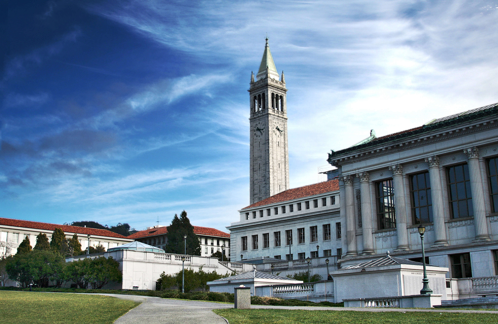

<div class="main-container">
<section class="image-square right white-cover fullscreen">
  <div class="col-md-6 image">
    <div class="background-image-holder fadeIn" style="background-image: url(&quot;aboutus.jpg&quot;); background-position: initial;" itemscope itemtype="https://schema.org/ImageObject">
      <span itemprop="author">Charlie Nguyen</span>
    
    </div>
  </div>
  <div class="col-md-6 content">
    <h5>
    <strong>Top Tutoring</strong> was created in 2009 by UC Berkeley graduates who saw the lack of quality, ethical tutoring that delivers. Since then, we have helped a countless number of students like you reach their academic goals and improve hundreds of points on the SAT. Our services currently include SAT tutoring, academic tutoring, and <a href = "http://www.essaysage.com"> essay editing.</a></br><br>
    <br />
    Our office is currently located in Alameda, California, where we teach both classes and individual tutoring. Schedule an appointment and visit us today!</h5>
  </div>
</section>
</div>
